Mantis Alien no es una persona: es un arquetipo. Un mensajero del inconsciente que baja a la cabina y convierte el Libro Rojo de C. G. Jung en un solo viaje de música electrónica, del primer paso hacia lo desconocido hasta la individuación.
Progressive house, techno melódico y trance. 124 → 138 BPM. Pensado para tocarse en vivo de principio a fin.
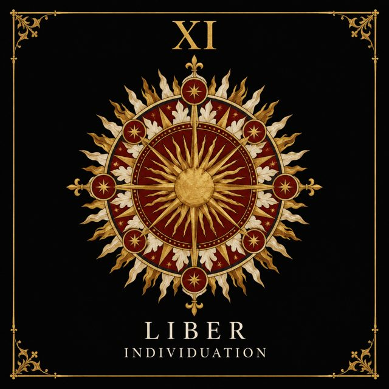
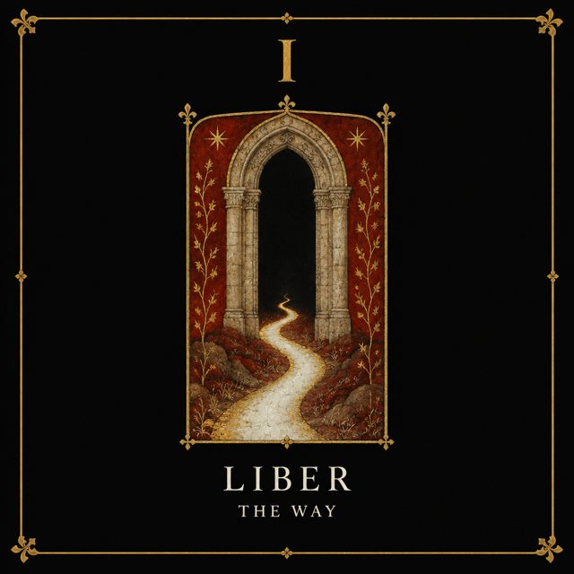
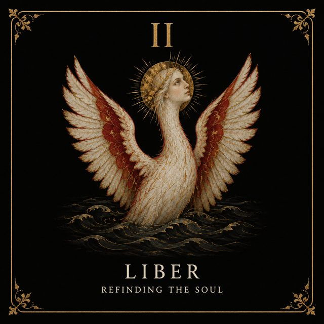
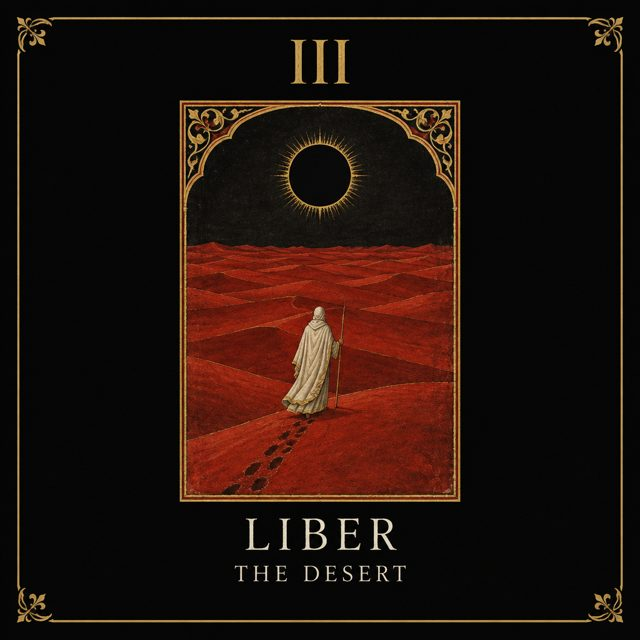
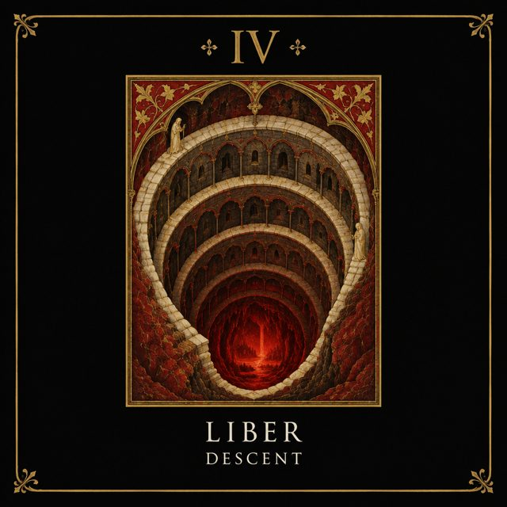
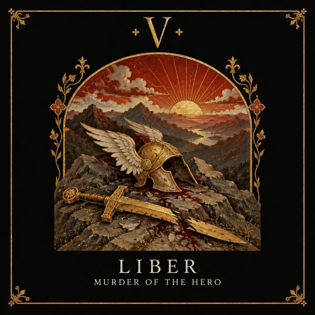
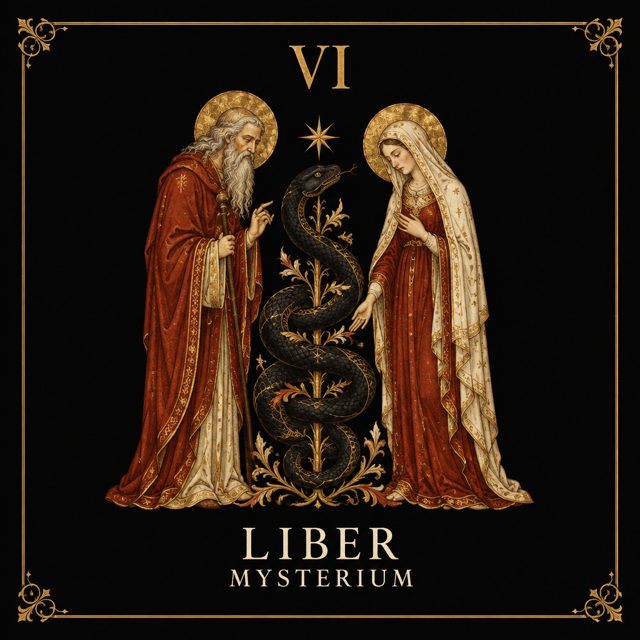
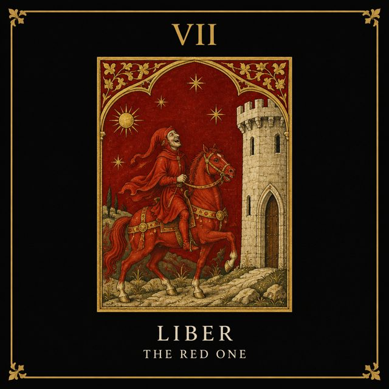
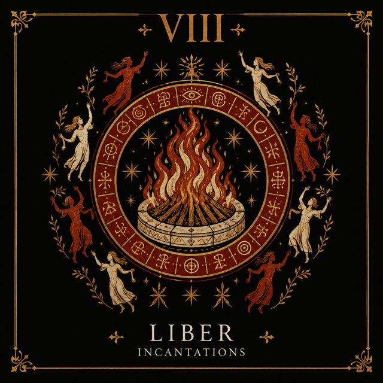
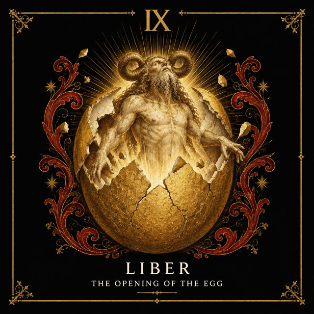
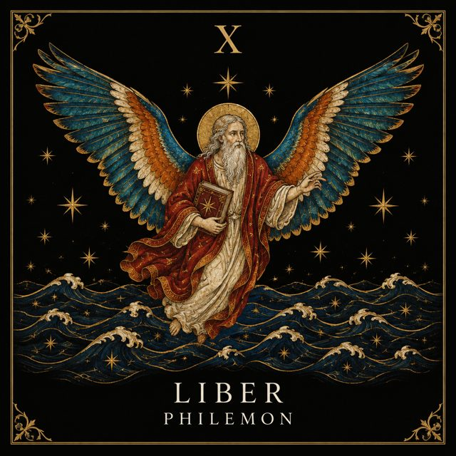
Producción asistida por herramientas de IA, dirección y curaduría humana.